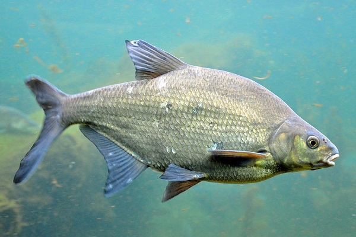
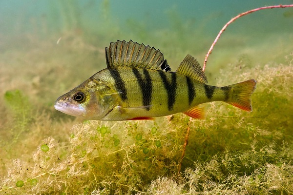
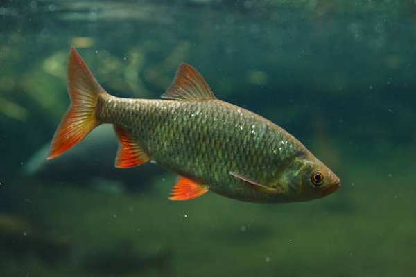
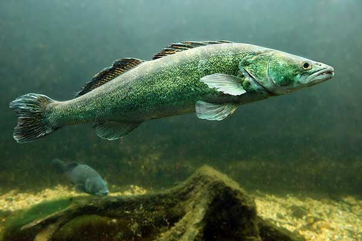
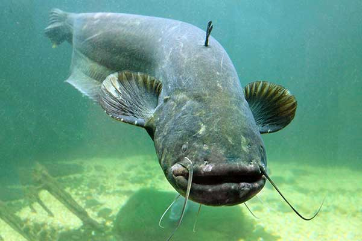
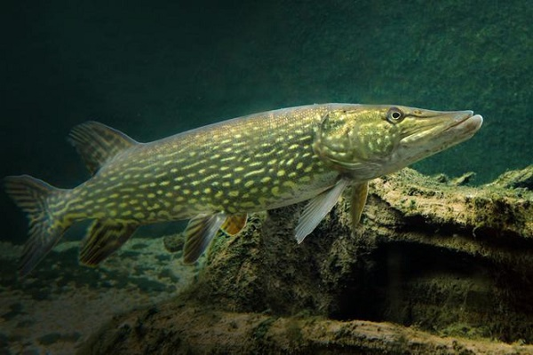

Znane gatunki ryb rzecznych występujących w Polsce

Leszcz - gatunek słodkowodnej ryby karpiokształtnej z rodziny karpiowatych (Cyprinidae).
W Polsce jest pospolity w dużych jeziorach, rzekach nizinnych i w przybrzeżnej strefie Bałtyku. Żyje w stadach w dolnych partiach dużych rzek (kraina leszcza), w jeziorach i zbiornikach zaporowych, najchętniej przebywa w głębokiej wodzie z bogatą roślinnością.

Okoń - gatunek drapieżnej ryby z rodziny okoniowatych (Percidae).
Występuje w wodach do 1000 m n.p.m., zarówno w płynących jak i stojących, a także w słonawych wodach przybrzeżnych w estuarium rzek. Młodsze osobniki często tworzą ławice, starsze żyją w niewielkich grupach bądź samotnie.

Płoć - gatunek ryby z rodziny karpiowatych (Cyprinidae).
Występuje we wszystkich wodach słodkich w Polsce (w rzekach, jeziorach i stawach, z wyjątkiem gór), także w wodach przybrzeżnych Bałtyku. Żyją w stadach, żerują gromadnie. Ryby te są płochliwe i bardzo ostrożne.

Sandacz - gatunek ryby okoniokształtnej z rodziny okoniowatych (Percidae).
Występuje w jeziorach, zbiornikach zaporowych, średnich i dużych nizinnych rzekach, wyrobiskach oraz w płytkich wodach przybrzeżnych Bałtyku. Preferuje głębokie, mętne wody o twardym, piaszczystym, żwirowatym bądź gliniastym dnie. Jest wrażliwy na niedobór tlenu.

Sum - gatunek ryby z rodziny sumowatych (Siluridae).
Spotykany w dużych rzekach i zbiornikach zaporowych, w jeziorach jest rzadszym mieszkańcem. Najczęściej aktywny po zachodzie słońca, w dzień przebywa na dolnych partiach, przy dnie, w miejscach o spokojnym przepływie. Prowadzi osiadły tryb życia i z natury jest samotnikiem. Zimą, od grudnia do lutego, nie żeruje.

Szczupak - gatunek szeroko rozprzestrzenionej, drapieżnej ryby z rodziny szczupakowatych (Esocidae).
Jego okołobiegunowy zasięg występowania jest największym naturalnym zasięgiem ryb wyłącznie słodkowodnych. Żyje w wodach słodkich, zarówno płynących, jak i stojących, oraz w słonawych wodach Bałtyku. Szczupak to jest król wody jak lew jest król dżungli.